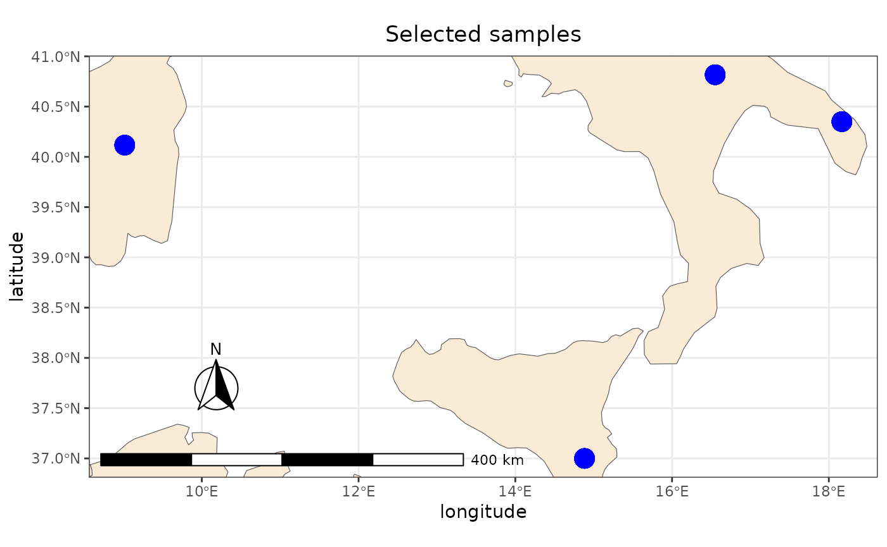

This vignette explain some tips in order to work and visualize
SMARTER data using the GeoJSON
endpoints: These endpoints in particular retrieve all the samples
with GPS coordinates (like using the locations__exists=TRUE
parameter with the get_smarter_samples() method) and then
return results as a Simple Feature.
This could help you doing spatial queries such as collect samples within
a certain area or calculate variables from a raster object. Moreover, is
it possible to display data using maps or plots. Here are some libraries
used in this vignette you may find useful:
library(sf)
library(leaflet)
library(ggplot2)
library(ggspatial)
library(rnaturalearth)
library(rnaturalearthdata)
library(elevatr)
library(geodata)
library(terra)
library(progress)
library(smarterapi)Get data using parameters
You can collect GeoJSON data using parameters, like using the
get_smarter_samples() function. This function will parse
the GeoJSON data to return a Simple Feature
object, which is a tibble object with a geometry column. For example,
try to collect data for the Sheep hapmap background
dataset:
hapmap_dataset <- get_smarter_datasets(query = list(
species = "Sheep",
type = "background",
type = "genotypes",
search = "hapmap"
))
hapmap_data <- get_smarter_geojson(species = "Sheep", query = list(
dataset = hapmap_dataset["_id.$oid"][1],
country = "Italy"
))Here is a preview of the first rows of the hapmap_data
object:
| breed | breed_code | chip_name | country | metadata |
|---|---|---|---|---|
| Altamurana | ALT | IlluminaOvineSNP50 | Italy | { “location_source”: “Altamura” } |
| Altamurana | ALT | IlluminaOvineSNP50 | Italy | { “location_source”: “Altamura” } |
| Altamurana | ALT | IlluminaOvineSNP50 | Italy | { “location_source”: “Altamura” } |
| Altamurana | ALT | IlluminaOvineSNP50 | Italy | { “location_source”: “Altamura” } |
| Altamurana | ALT | IlluminaOvineSNP50 | Italy | { “location_source”: “Altamura” } |
| Altamurana | ALT | IlluminaOvineSNP50 | Italy | { “location_source”: “Altamura” } |
| original_id | sex | smarter_id | species | type |
|---|---|---|---|---|
| ALT1 | NA | ITOA-ALT-000001084 | Ovis aries | background |
| ALT23 | NA | ITOA-ALT-000001085 | Ovis aries | background |
| ALT10 | NA | ITOA-ALT-000001086 | Ovis aries | background |
| ALT20 | NA | ITOA-ALT-000001087 | Ovis aries | background |
| ALT21 | NA | ITOA-ALT-000001088 | Ovis aries | background |
| ALT22 | NA | ITOA-ALT-000001089 | Ovis aries | background |
| geometry |
|---|
| MULTIPOINT ((16.55 40.82)) |
| MULTIPOINT ((16.55 40.82)) |
| MULTIPOINT ((16.55 40.82)) |
| MULTIPOINT ((16.55 40.82)) |
| MULTIPOINT ((16.55 40.82)) |
| MULTIPOINT ((16.55 40.82)) |
Filter data using spatial queries
An alternative approach in selecting samples exploits spatial queries. In this example, we imported the goat dataset as geojson file into qgis. Then we created two polygons features in correspondance of the samples we want to collect using GPS coordinates like in the following picture:
Then we exported the two polygons as a shapefile. Here is
how we can do a spatial query with st_intersects() in order
to collect samples in correspondance of the two areas of interest:
polygons_file <- system.file("extdata", "polygons.shp", package = "smarterapi")
polygons <- sf::st_read(polygons_file)
goat_data <- get_smarter_geojson("Goat", query = list(type = "background"))
sel_sgbp <- sf::st_intersects(goat_data, polygons)
sel_logical <- lengths(sel_sgbp) > 0
selected_goats <- goat_data[sel_logical, ]The same query could be done using the
get_smarter_geojson() function and providing the polygons
as an argument:
selected_goats <- get_smarter_geojson(
"Goat",
query = list(type = "background"),
polygons = polygons
)This means that you can also provide any sf object as a
polygon argument. Here we select by country, but using spatial
queries:
italy <- rnaturalearth::ne_countries(scale = "medium", returnclass = "sf") %>%
dplyr::filter(name == "Italy")
italy_goats <- get_smarter_geojson(
"Goat",
query = list(type = "background"),
polygons = italy
)Convert from MULTIPOINTS to POINT
The get_smarter_geojson() methods returns a
sf MULTIPOINTS objects since multiple locations
could be collected for each animal, for example for transhumant
samples. However, for simplicity, we can focus our analyses using only
one GPS coordinate, transforming this MULTIPOINTS object into a
POINT object:
hapmap_data <- hapmap_data %>% sf::st_cast("POINT", do_split = FALSE)
hapmap_data
#> Simple feature collection with 92 features and 11 fields
#> Geometry type: POINT
#> Dimension: XY
#> Bounding box: xmin: 9.016667 ymin: 37 xmax: 18.16667 ymax: 40.81667
#> Geodetic CRS: WGS 84
#> # A tibble: 92 × 12
#> breed breed_code chip_name country dataset metadata original_id sex
#> <chr> <chr> <chr> <chr> <chr> <chr> <chr> <int>
#> 1 Altamurana ALT IlluminaOvi… Italy "{ \"$… "{ \"lo… ALT1 NA
#> 2 Altamurana ALT IlluminaOvi… Italy "{ \"$… "{ \"lo… ALT23 NA
#> 3 Altamurana ALT IlluminaOvi… Italy "{ \"$… "{ \"lo… ALT10 NA
#> 4 Altamurana ALT IlluminaOvi… Italy "{ \"$… "{ \"lo… ALT20 NA
#> 5 Altamurana ALT IlluminaOvi… Italy "{ \"$… "{ \"lo… ALT21 NA
#> 6 Altamurana ALT IlluminaOvi… Italy "{ \"$… "{ \"lo… ALT22 NA
#> 7 Altamurana ALT IlluminaOvi… Italy "{ \"$… "{ \"lo… ALT15 NA
#> 8 Altamurana ALT IlluminaOvi… Italy "{ \"$… "{ \"lo… ALT8 NA
#> 9 Altamurana ALT IlluminaOvi… Italy "{ \"$… "{ \"lo… ALT16 NA
#> 10 Altamurana ALT IlluminaOvi… Italy "{ \"$… "{ \"lo… ALT24 NA
#> # ℹ 82 more rows
#> # ℹ 4 more variables: smarter_id <chr>, species <chr>, type <chr>,
#> # geometry <POINT [°]>The warnings you see in your terminal tell you that you are considering only the first coordinate object from each MULTIPOINT collection.
Visualize SMARTER GPS data
Displaying data using ggplot2
sf data could be visualized using ggplot2. In the
following examples we derive the countries from the
rnaturalearth package, then we will zoom the plot to the
selected points of the previous example:
# determine a bounding box around our samples
bbox <- sf::st_bbox(hapmap_data)
# collect the world countries as sf
world <- rnaturalearth::ne_countries(scale = "medium", returnclass = "sf")
# plot the data: use the bounding box to zoom the plot on our samples
ggplot2::ggplot() +
ggplot2::geom_sf(data = world, fill = "antiquewhite") +
ggplot2::geom_sf(data = hapmap_data, color = "blue", size = 5) +
ggspatial::annotation_scale(location = "bl", width_hint = 0.5) +
ggspatial::annotation_north_arrow(
location = "bl",
which_north = "true",
pad_x = ggplot2::unit(0.75, "in"),
pad_y = ggplot2::unit(0.5, "in"),
style = ggspatial::north_arrow_fancy_orienteering
) +
ggspatial::coord_sf(
xlim = c(bbox$xmin, bbox$xmax),
ylim = c(bbox$ymin, bbox$ymax)
) +
ggplot2::theme_bw() +
ggplot2::theme(plot.title = ggplot2::element_text(hjust = 0.5)) +
ggplot2::xlab("longitude") + ggplot2::ylab("latitude") +
ggplot2::ggtitle("Selected samples")
See this
post for a nice introduction to sf and
ggplot2.
Displaying data using leaflet
Data could be visualized in an interactive way using R
leaflet library:
leaflet::leaflet(
data = hapmap_data,
options = leaflet::leafletOptions(minZoom = 5, maxZoom = 10)
) %>%
leaflet::addTiles() %>%
leaflet::addMarkers(
clusterOptions = leaflet::markerClusterOptions(), label = ~smarter_id
)See Leaflet for R documentation for more information.
Integrate data with external sources
Derive elevation data using elevatr
We can collect elevation data using the elevatr package.
The following functions returns the input dataframe with
elevation and elev_units as additional
columns:
prj_dd <- "EPSG:4326"
hapmap_data_elev <- elevatr::get_elev_point(
hapmap_data,
prj = prj_dd,
src = "aws"
)See elevatr vignette or elevatr tutorial in rspatialdata documentation for more information and examples.
Add worldclim data from rasters
We can collect data from worldclim database using the
geodata package: this package in particular collect
raster data from different sources (see geodata reference
manual for more information). In this example, we collect the
raster with the lowest definition (10min =~ 340km) for
worldclim bioclimatic
variables and elevation. Raster images will be placed in the
tempdir path. Then using terra::extract we
calculate the values for our data, after converting them into terra
SpatialVectors:
worldclim_bio <- geodata::worldclim_global(
var = "bio",
res = 10,
path = tempdir()
)
bio_data <- terra::extract(worldclim_bio, terra::vect(hapmap_data))
worldclim_elev <- geodata::worldclim_global(
var = "elev",
res = 10,
path = tempdir()
)
elev_data <- terra::extract(worldclim_elev, terra::vect(hapmap_data))
hapmap_data_worldclim <- cbind(hapmap_data, merge(elev_data, bio_data))See raster extraction from geocomputation with R for more information.